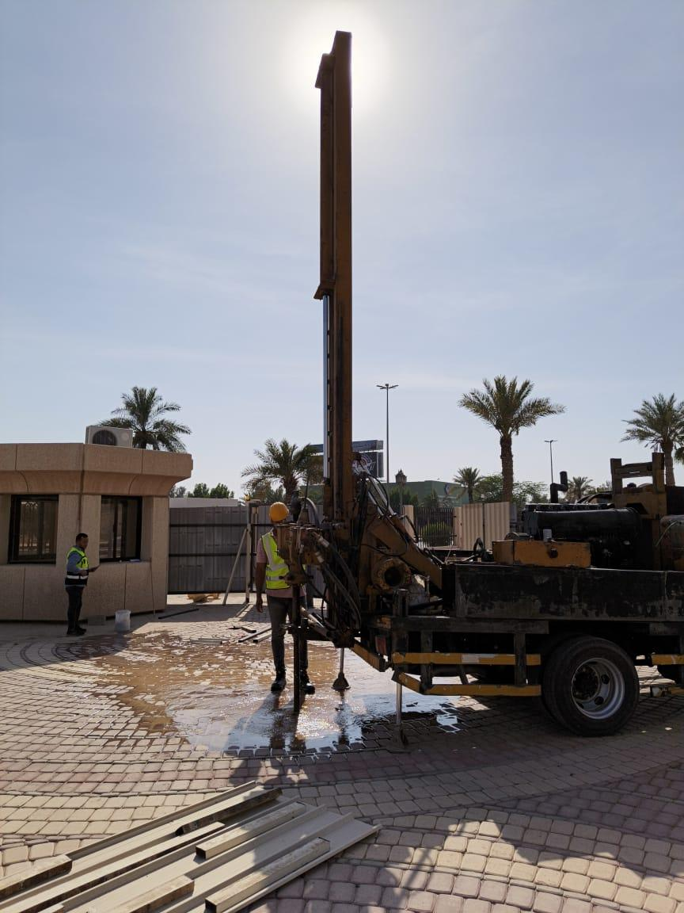
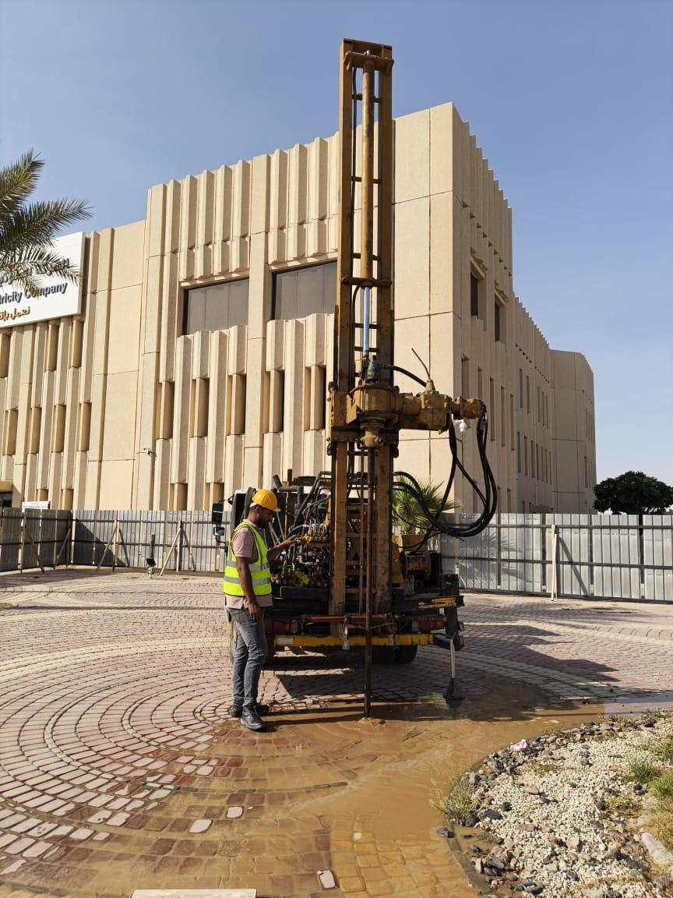
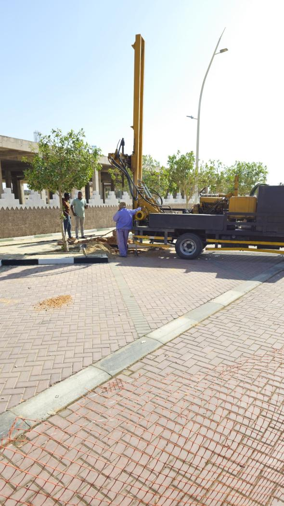
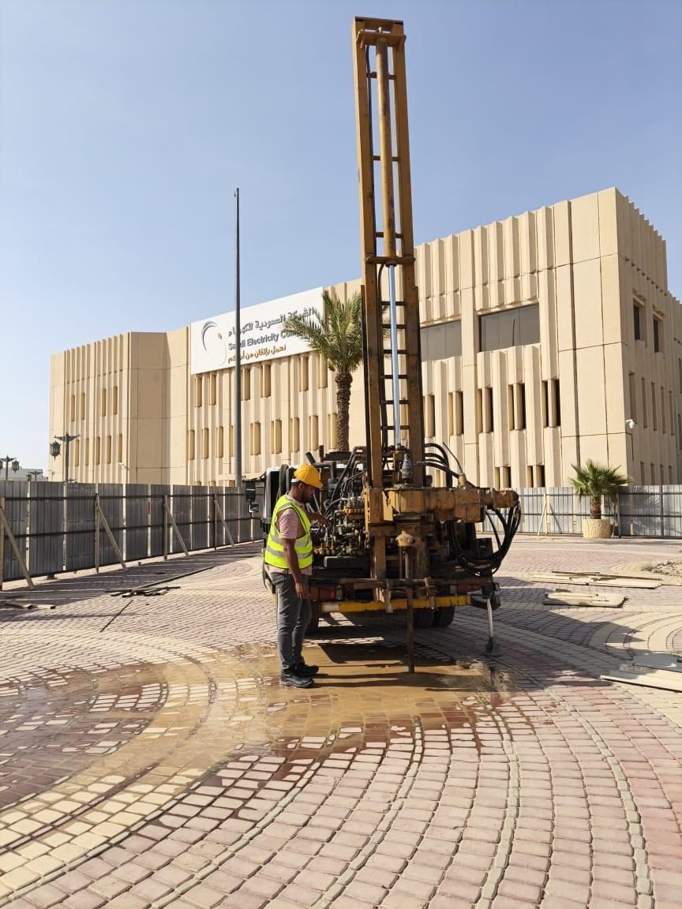
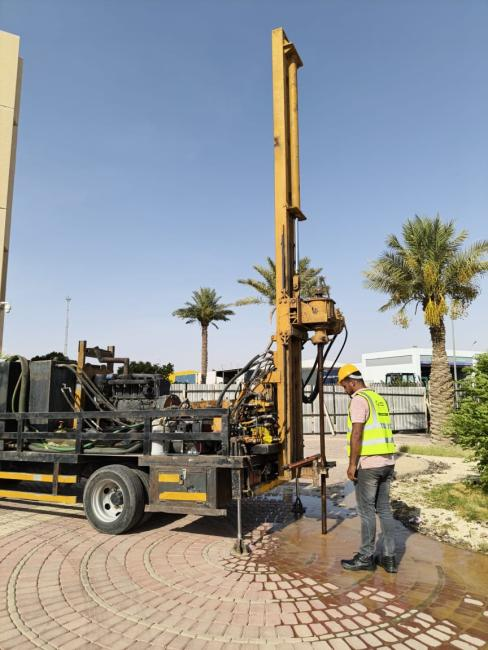
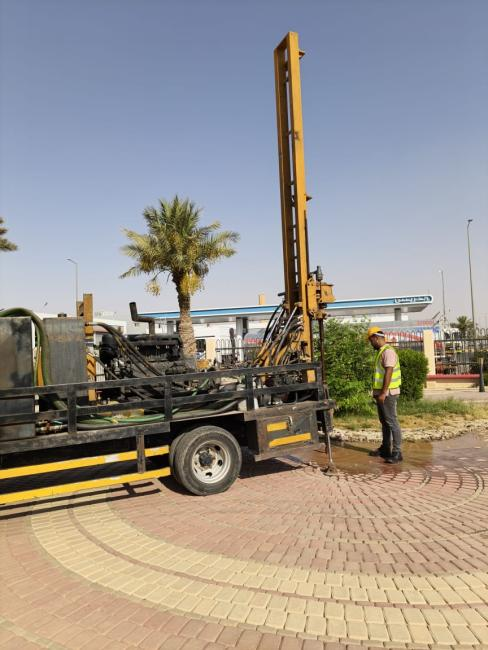
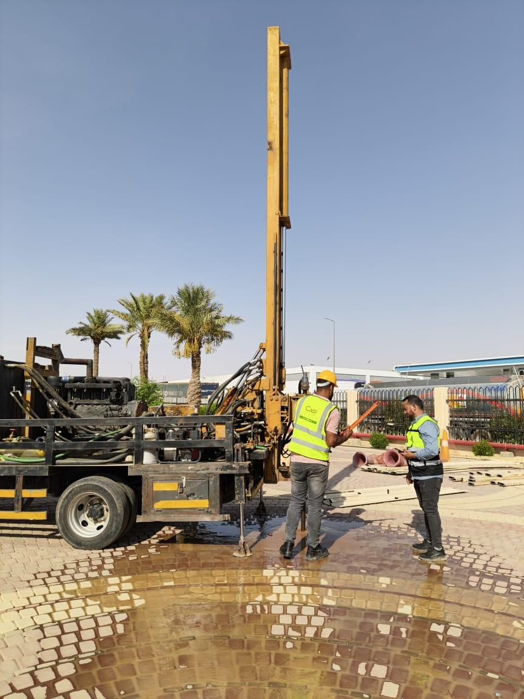

FIELD WORK GALLERY
من أعمالنا الميدانية
صور حقيقية من مواقع تنفيذ الجسات والتحريات الواردة في بروفايل الشركة.











خبرة عملية في مواقع وبيئات تنفيذ متنوعة، تشمل مشاريع سكنية وتجارية وإدارية ومنشآت صناعية وخدمية ومشاريع بنية تحتية.
صور حقيقية من مواقع تنفيذ الجسات والتحريات الواردة في بروفايل الشركة.







فلل ومبانٍ سكنية ومشاريع تطوير عقاري.
مبانٍ وصالات ومستودعات ومنشآت تجارية.
مصانع وورش ومحطات وقود ومرافق خدمية.
أعمال تتطلب تحريات جيوتقنية وفحوصات تربة ميدانية ومعملية.